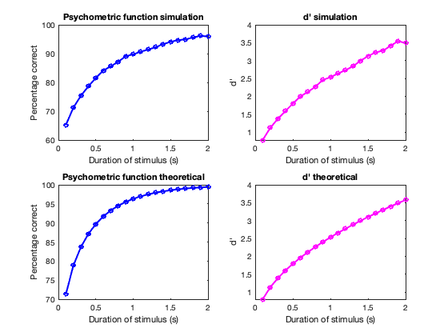
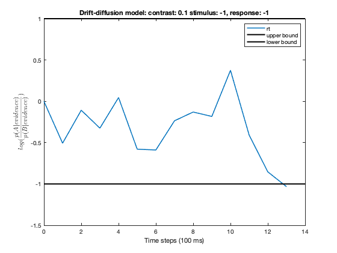
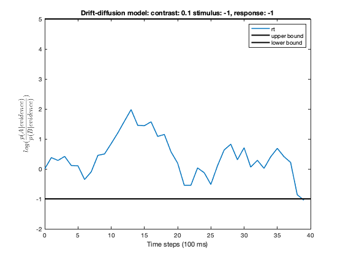
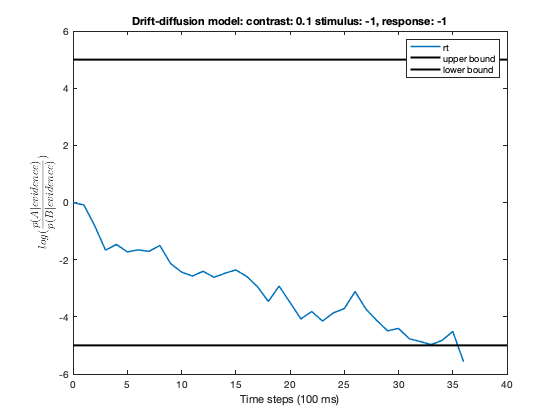
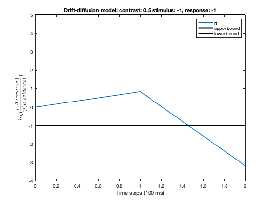
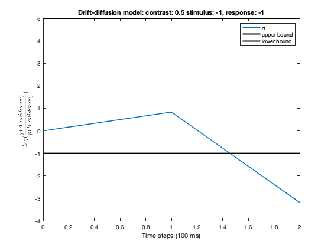

Contents
clear; close all; clc;
Q1a)
variable duration and constant contrast
Setting up the constants: stimulus_duration varies between 0.1 s to 2 s, lets say there are 10000 trials per experiment, the contrast is given to be 0.2, the variance of both the distributions is 1, and A and B are equally likely to pA = 0.5
stim_dur = 0.1: 0.1: 2; trials_per_experiment = 10000; contrast = 0.2; var_dist = 1; pA = 0.5;
Next, arrays that will hold simulated percentage correct, simulated dprime, theoretical percentage correct, and theoretical dprime are initialized. The critical value is not given so lets initialize it to None, this will make use of the optimal criterion.
percentage_correct_simul = zeros(size(stim_dur)); dprime_simul = zeros(size(stim_dur)); percentage_correct_theor = zeros(size(stim_dur)); dprime_theor = zeros(size(stim_dur)); crit = 10000;
For each stim_duration, run the experiment AFC_experiment. Here the optimal criterion is expected to be zero as that is where the two distributions will overlap given that their means are +2*c*time_steps and -2*c*time_steps and that they have the same standard deviation.
for i = 1:length(stim_dur) dur = stim_dur(i); [optim_criterion, pcorr_simul, dp_simul, pcorr_theor, dp_theor] = ... AFC_experiment(dur, contrast, var_dist,... pA, trials_per_experiment, crit); if i == 1 disp(['The optimum criterion is: ', num2str(optim_criterion)]) end percentage_correct_simul(i) = pcorr_simul; dprime_simul(i) = dp_simul; percentage_correct_theor(i) = pcorr_theor; dprime_theor(i) = dp_theor; end figure(1); xlab = 'Duration of stimulus (s)'; plot_figs(stim_dur, percentage_correct_simul, dprime_simul, percentage_correct_theor, ... dprime_theor, xlab)
From the graphs, we can see that the theoretical predictions match the simulations. Specifically we see that the percentage correct increases monotonically as the stimulus duration increases as this allows the subject to accumulate more evidence and hence respond correctly more often. This is the psychometric function and it begins saturating as the stimulus duration increase does not have as much impact on the performance after a certain threshold.
d' is the sensitivity of the stimulus and it increases with the duration as the evidence accumulated increases. This is because each evidence comes from a normal distribution of mean 2*c for A and -2*c for B. As duration of the stimulus increases, the timesteps in which the evidence is accumulated increases and the resulting evidence now comes from a normal distribution of mean 2*c*time_steps for A and -2*c*time_steps for B. Therefore, the two distributions get further and further apart thereby increasing the d'.
constant duration and variable contrast
Setting up the constants: duration of stimulus is now constant at 0.2 s, lets say there are 10000 trials per experiment, the contrast varies between 0.05 and 1. The variance of both the distributions is 1, and A and B are equally likely to pA = 0.5
dur = 0.2; stim_contrast = 0.05: 0.05: 1; pA = 0.5;
Next, arrays that will hold simulated percentage correct, simulated dprime, theoretical percentage correct, and theoretical dprime are initialized. The critical value is not given so lets initialize it to None, this will make use of the optimal criterion.
percentage_correct_simul = zeros(size(stim_contrast)); dprime_simul = zeros(size(stim_contrast)); percentage_correct_theor = zeros(size(stim_contrast)); dprime_theor = zeros(size(stim_contrast));
For each stim_contrast, run the experiment AFC_experiment. Here the optimal criterion is expected to be zero as that is where the two distributions will overlap given that their means are +2*c*time_steps and -2*c*time_steps and that they have the same standard deviation.
for i = 1:length(stim_contrast) contrast = stim_contrast(i); [optim_criterion, pcorr_simul, dp_simul, pcorr_theor, dp_theor] = ... AFC_experiment(dur, contrast, var_dist,... pA, trials_per_experiment, crit); if i == 1 disp(['The optimum criterion is: ', num2str(optim_criterion)]) end percentage_correct_simul(i) = pcorr_simul; dprime_simul(i) = dp_simul; percentage_correct_theor(i) = pcorr_theor; dprime_theor(i) = dp_theor; end figure(2); xlab = 'Contrast of stimulus (s)'; plot_figs(stim_contrast, percentage_correct_simul, dprime_simul, percentage_correct_theor, ... dprime_theor, xlab)
The optimum criterion is: 0

From the graphs, we can see that the theoretical predictions match the simulations. Specifically we see that the percentage correct increases monotonically as the stimulus contrast increases as this allows the subject to better distinguish the stimulus from noise and hence respond correctly more often. This is the psychometric function and it begins saturating as the stimulus contrast increase does not have as much impact on the performance after a certain threshold.
d' is the sensitivity of the stimulus and it increases with the contrast increases. This is because the evidence for a given trials comes from a normal distribution of mean 2*c for A and -2*c for B. As contrast of the stimulus increases, the means of A and B increase further apart. Therefore, the two distributions get further and further apart thereby increasing the d'.
Q1b)
Setting up the constants: duration of stimulus is now constant at 0.4 s, lets say there are 100 trials per experiment, the contrast is constant at 0.1. The variance of both the distributions is 1, and A and B are equally likely to pA = 0.75
dur = 0.4; trials_per_experiment = 100; contrast = 0.1; var_dist = 1; pA = 0.75;
Running the AFC experiment to compute the optimum criterion, percentage correct simulated, dp simulated. Ignore the theoretical predictions here.
[optim_criterion, pcorr_simul_optim, dp_simul_optim, pcorr_theor_optim, dp_theor_optim] = ... AFC_experiment(dur, contrast, var_dist,... pA, trials_per_experiment, crit); disp(['The optimum criterion is: ', num2str(optim_criterion)]) performance_summary = [optim_criterion, pcorr_simul_optim, dp_simul_optim]; crit = 0; [optim_criterion_0, pcorr_simul_0, dp_simul_0, pcorr_theor_0, dp_theor_0] = ... AFC_experiment(dur, contrast, var_dist,... pA, trials_per_experiment, crit); performance_summary = [performance_summary; ... crit, pcorr_simul_0, dp_simul_0]; ColNames = {'Criterion', 'pcorrect_simulation', 'dp_simulation'}; T = table(performance_summary(:, 1), performance_summary(:, 2), ... performance_summary(:, 3), ... 'VariableNames', ColNames); disp(T)
The optimum criterion is: -2.7465
Criterion pcorrect_simulation dp_simulation
_________ ___________________ _____________
-2.7465 79 0.39875
0 65 0.92488
From the table we can see that the percentage correct is higher in case of the optimal criterion and the simulated dprime is also higher. This is because the optimal criterion is the one that maximizes the performance.
Q2
Initiliazing the constants
dur = 2; trials_per_experiment = 100; stim_contrast = [0.1 0.5]; var_dist = 1; crit = 10000; pA = 0.5;
The lower bounds are taken to be -1 (near bound) and -5 (farther bound). Similarly the upper bounds are taken to be 1 (near bound) and 5 (farther bound). The RT experiment is run for each pair of contrast, ub, and lb, and the performance metrics are summarized.
lower_bounds = [-1, -5]; upper_bounds = [1, 5]; output = zeros(1, 9); for contrast = stim_contrast for lb = lower_bounds for ub = upper_bounds [optim_criterion, Hrate, FArate, rtime] = ... RT_experiment(dur, contrast, var_dist,... pA, trials_per_experiment, crit, lb, ub); output = [output; contrast, lb, ub, Hrate, FArate, median(rtime, 1),... var(rtime, 1), min(rtime), max(rtime)]; end end end output = output(2:end, :); ColNames = {'Contrast', 'LowerBound', 'UpperBound', 'Hitrate', 'FArate',... 'rtime_median', 'rtime_var', 'rtime_min', 'rtime_max'}; T = table(output(:, 1), output(:, 2), output(:, 3), output(:, 4), ... output(:, 5), output(:, 6), output(:, 7), output(:, 8), ... output(:, 9), 'VariableNames', ColNames); disp(T)
From the table we can see that as the contrast of the stimulus increases, the reaction time decreases. The hit rate is determined by the upper bound, the lower is the upper bound and the higher is the contrast, higher is the hit rate. The false alarm rate is determined by the lower bound. The lower is the bound, the further away is the lower bound, the higher is the false alarm rate.
The symmetric bounds that are closer account for quick response but higher errors. And the symmetric bounds that are farther away account for slower response but have a much better performance with higher hit rate and almost 0 false alarm rate. The asymmetric bounds hamper either the hit rate or the false alarm rate.
%%%%%%%%%%%%%%%%%%%%%%%%%%%%%%%%%%%%%%%%%%%%%%%%%%%%%%%%%%%%%%%%%%%%%%%%%%%
Simulation for AFC
The trials in the experiment are simulated as +1 for stimulus A and -1 for stimulus B, the probabilities of the stimuli are determined by pA, and the length of the experiment is determined by t_length
The time_steps variable stores the number of time_steps each of 100 ms in which the evidence will be stored. The mean and variance of the new distribution is then just a sum of the old distributions over the time_steps
The optimum criterion (x) is when the two distributions overlap. This happens when the posterior probabilities of the two distributions are the same i.e. when p(A|x)/p(B|x) = 1. Using Bayesian probabilities, we have:
Therefore, for optimum criterion, we have:
Using the definition of Gaussian probabilty, we get:
Taking log on both sides:
Since the variance of A and B are the same and the mean of B = - mean of A, we can write:
Solving for x, we get:
This is the optimal criterion. The evidence is computed as a sample from a normal distribution with mean = 2*contrast*time_steps, and var = A_var.
The response is a matrix that is 1 if evidence is greater than the criterion and -1 if evidence is less than the criterion.
This is followed by the computation of Hits (H), Misses (M), False alarms (FA) and correct rejections (CR).
Percentage correct trials in the simulation is the ratio of hits + correct rejections to the total number of trials in the experiment multiplied by 100.
The dprime from simulation is given as dprime_simul = zH - zFA where z is the z-score associated with the Hitrate and the false alarm rate, respectively.
Theoretical for AFC
The theoretical percentage correct is the sum of the product of the cumulative distribution of noise (B) and the probability density function of signal (A). The theoretical dprime is the ratio of the difference between the means of the two distributions and the standard deviation of the distributions.
Function to run AFC_experiment
function [optim_criterion, pcorr_simul, dp_simul, pcorr_theor, dp_theor] = ... AFC_experiment(dur, contrast, var_dist, pA, t_length, crit) % Simulation trials = rand(t_length, 1); trials = (trials>(1-pA)) -1 * (trials<=(1-pA)); time_steps = dur * 10; B_mean = -2 * time_steps * contrast; A_mean = 2 * time_steps * contrast; B_var = time_steps * var_dist; A_var = time_steps * var_dist; prior_odds = pA/(1-pA); optim_criterion = A_var/(2*A_mean) * log(1/prior_odds); if crit == 10000 crit = optim_criterion; end evidence = time_steps * 2 * contrast * trials + ... sqrt(A_var) * trials .* randn(t_length, 1); response = (evidence > crit) -1 * (evidence <= crit); H = 0; M = 0; CR = 0; FA = 0; for i = 1:t_length if trials(i) == 1 if response(i) == 1 H = H + 1; else M = M + 1; end else if response(i) == -1 CR = CR + 1; else FA = FA + 1; end end end pcorr_simul = (H + CR) * 100/t_length; Hrate = H/(H+M); FArate = FA/(FA+CR); if Hrate == 1 Hrate = 0.9999; end if FArate == 0 FArate = 0.0001; end zH = -sqrt(2) * erfcinv(2*Hrate); zFA = -sqrt(2) * erfcinv(2*FArate); dp_simul = zH - zFA; % Theoretical resp_range = B_mean-3*B_var: 0.01: A_mean+3*A_var; B_cdf = normcdf(resp_range, B_mean, sqrt(B_var)); A_pdf = normpdf(resp_range, A_mean, sqrt(A_var)); pcorr_theor = sum(A_pdf .* B_cdf); dp_theor = (A_mean - B_mean)/sqrt(A_var); end
The optimum criterion is: 0
Simulation for RT
The trials in the experiment are simulated as +1 for stimulus A and -1 for stimulus B, the probabilities of the stimuli are determined by pA, and the length of the experiment is determined by t_length. The responses and reaction times are initialized as zeros.
The time_steps variable stores the number of time_steps each of 100 ms in which the evidence will be stored. The mean and variance of the new distribution is then just a sum of the old distributions over the time_steps
The optimum criterion (x) is computed as in AFC. For each trial, the log_posteriors is computed from the log_priors which is log(p(A)/p(B)) and updated by the evidence at each time-step given by the log-likelihood ratio:
The update log posteriors is then: log_posteriors = log_likelihood_ratio + log_priors.
At time step 0, log_posteriors = log_priors = 0 for the case p(A) = p(B).
The trial runs until the log_posteriors hit either the upper bound or the lower bound which determines the response as either +1 (A) or -1 (B). The reaction time is the length of log_posteriors - 1.
The trials and response vectors are then compared to determine the hit rate and the false alarm rate.
Function to run reaction-time experiment
function [optim_criterion, Hrate, FArate, rtime] = ... RT_experiment(dur, contrast, var_dist, pA, t_length, crit, lb, ub) trials = rand(t_length, 1); trials = (trials>(1-pA)) -1 * (trials<=(1-pA)); response = zeros(t_length, 1); rtime = zeros(t_length, 1); % Simulation time_steps = dur * 10; B_mean = -2 * time_steps * contrast; A_mean = 2 * time_steps * contrast; B_var = time_steps * var_dist; A_var = time_steps * var_dist; prior_odds = pA/(1-pA); optim_criterion = A_var/(2*A_mean) * log(1/prior_odds); if crit == 10000 crit = optim_criterion; end log_priors = log(prior_odds); for trial_count = 1:t_length trial = trials(trial_count); log_posteriors = log_priors; while (lb < log_posteriors(end)) & (log_posteriors(end) < ub) evidence = 2 * contrast * trial + ... trial * randn(); evidence_A = normpdf(evidence, A_mean, sqrt(A_var)); evidence_B = normpdf(evidence, B_mean, sqrt(B_var)); updated_posterior = log_posteriors(end) + ... log(evidence_A/evidence_B); log_posteriors = [log_posteriors, updated_posterior]; end response(trial_count) = (log_posteriors(end) >= ub) -1 * (log_posteriors(end) <= lb); rtime(trial_count) = length(log_posteriors) - 1; if trial_count == 10 figure(); plot(0:rtime(trial_count), log_posteriors, 'LineWidth', 1.5, ... 'DisplayName', 'rt') hold on; plot(xlim, [ub, ub], 'k', 'LineWidth', 2, 'DisplayName', ... 'upper bound') plot(xlim, [lb, lb], 'k', 'LineWidth', 2, 'DisplayName', ... 'lower bound') xlabel('Time steps (100 ms)') ylabel('$$log(\frac{p(A|evidence)}{p(B|evidence)})$$', 'Interpreter', 'latex') title(['Drift-diffusion model: ', 'contrast: ', num2str(contrast),... ' stimulus: ', num2str(trials(trial_count)),... ', response: ', num2str(response(trial_count))]) legend() end end H = 0; M = 0; CR = 0; FA = 0; for i = 1:t_length if trials(i) == 1 if response(i) == 1 H = H + 1; else M = M + 1; end else if response(i) == -1 CR = CR + 1; else FA = FA + 1; end end end Hrate = H/(H+M); FArate = FA/(FA+CR); end
Contrast LowerBound UpperBound Hitrate FArate rtime_median rtime_var rtime_min rtime_max
________ __________ __________ _______ ________ ____________ _________ _________ _________
0.1 -1 1 0.75 0.23077 7 43.542 2 34
0.1 -1 5 0.68889 0 15 527.9 1 110
0.1 -5 1 1 0.36735 16 578.74 2 111
0.1 -5 5 0.97872 0 54.5 2132.7 17 309
0.5 -1 1 0.90909 0.088889 1 0.2976 1 4
0.5 -1 5 0.91837 0 2 2.9696 1 9
0.5 -5 1 1 0.098039 2 2.1076 1 8
0.5 -5 5 1 0.017544 3 2.78 1 10
    
 

Function to create plots
function plot_figs(x, y1, y2, y3, y4, xlab) subplot(2, 2, 1) plot(x, y1, 'b-o', 'LineWidth', 2, ... 'MarkerSize', 5) xlabel(xlab) ylabel('Percentage correct') title('Psychometric function simulation') subplot(2, 2,2) plot(x, y2, 'm-o', 'LineWidth', 2, ... 'MarkerSize', 5); xlabel(xlab) ylabel("d'") title("d' simulation") subplot(2, 2, 3) plot(x, y3, 'b-o', 'LineWidth', 2, ... 'MarkerSize', 5) xlabel(xlab) ylabel('Percentage correct') title('Psychometric function theoretical') subplot(2, 2, 4) plot(x, y4, 'm-o', 'LineWidth', 2, ... 'MarkerSize', 5); xlabel(xlab) ylabel("d'") title("d' theoretical") end